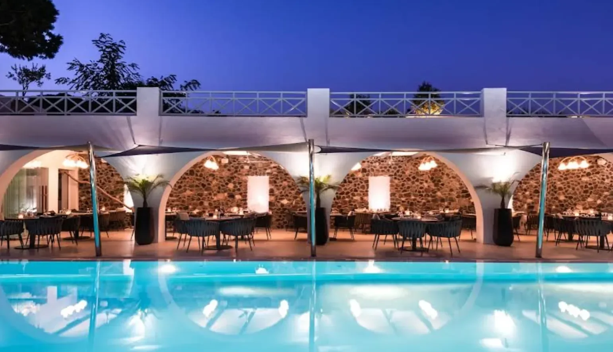
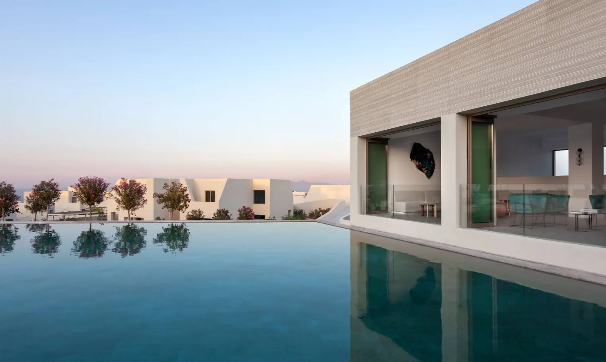
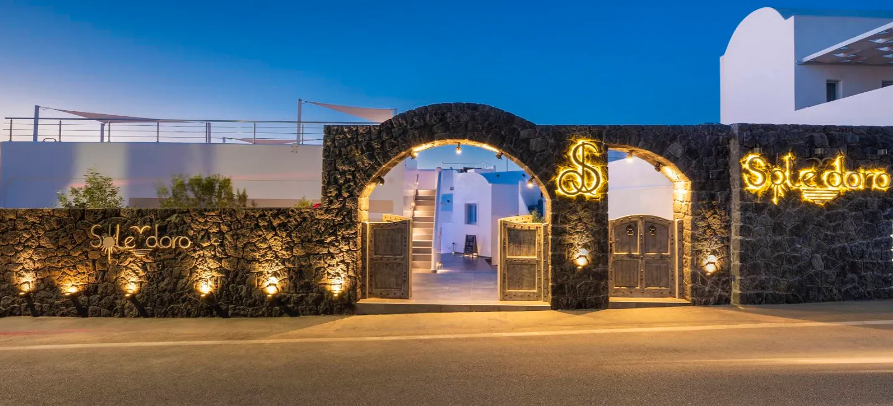
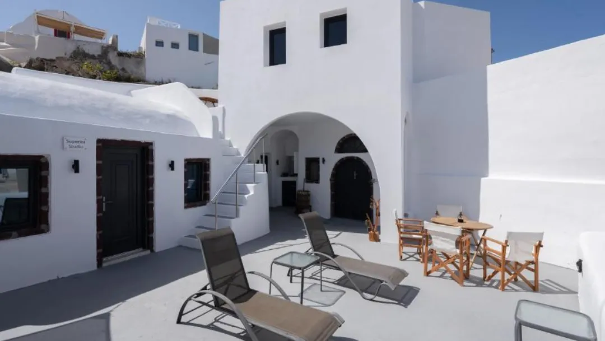
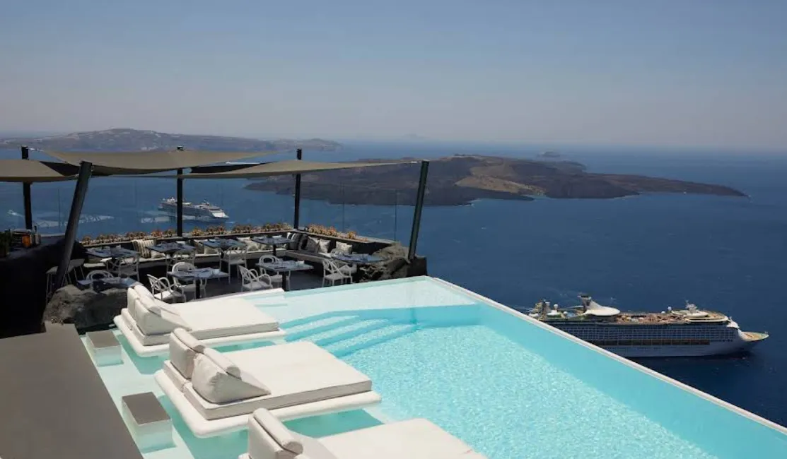
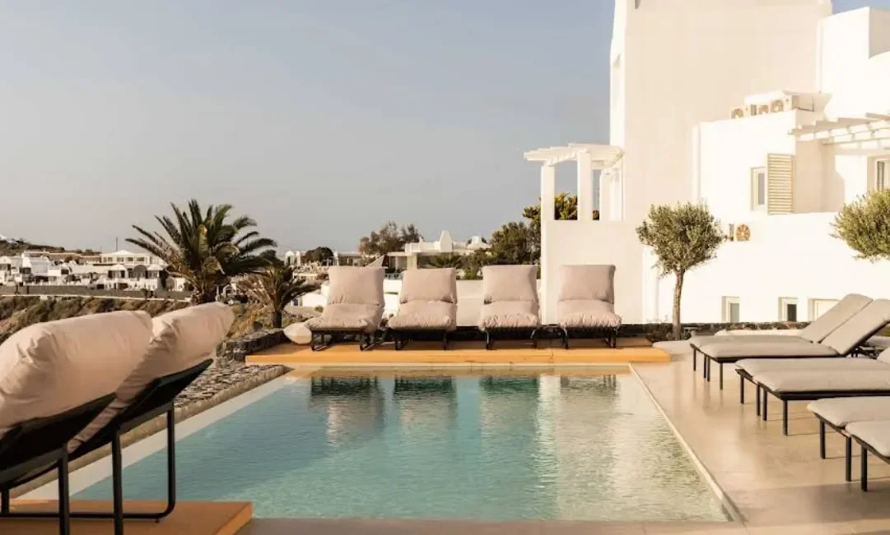
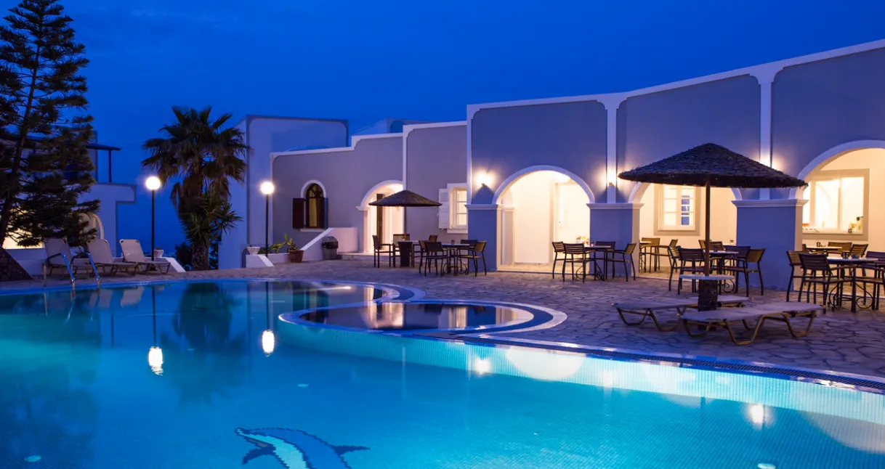

Home
Explore
Contact
Explore Santorini
Recommended Hotels

Kastelli Resort

NOŪS Santorini

Sole d’oro Luxury Suites
Caves 1880

Loucas on the Cliff
Dana Villas & Infinity Suites

Rocabella Santorini

Athina Luxury Suites
Porto Castello

Maistros Village